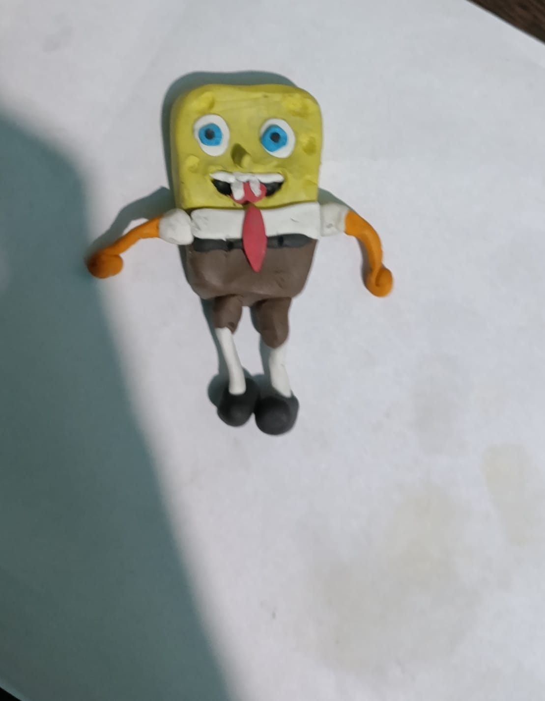
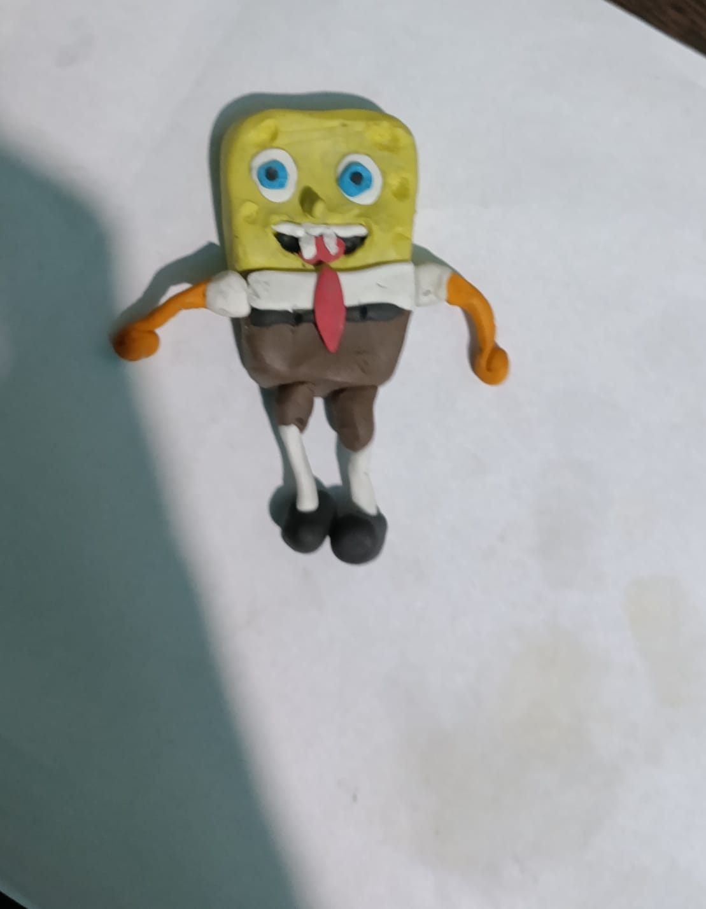
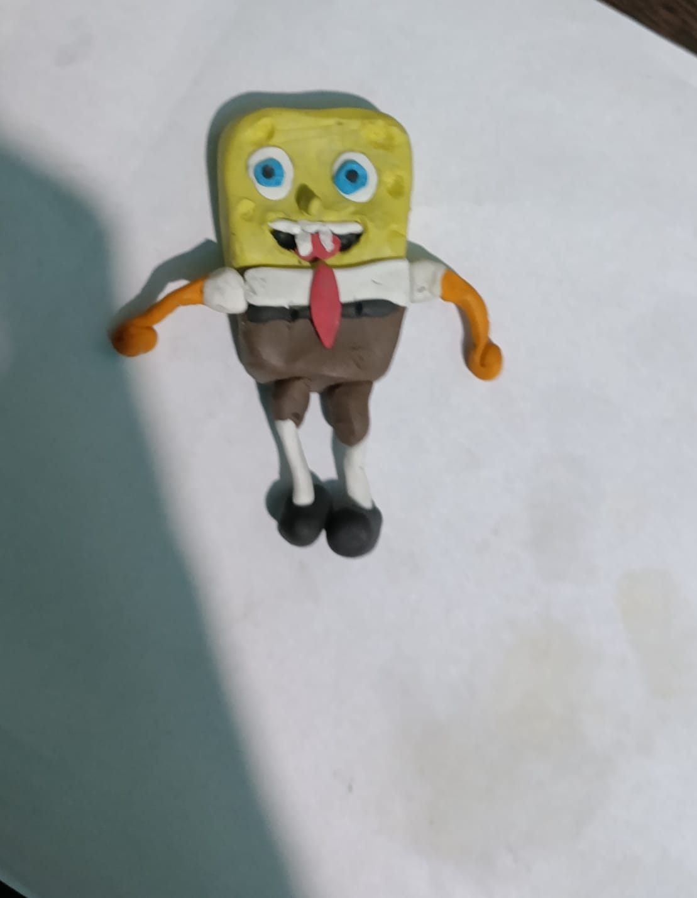

Gracias por un año con muchas sonrisas y momentos inolvidables !! como algunos de los que tengo fotos y muchos mas que estan guardaditos en el corazon. Quiero seguir construyendo miles de cosas a tu lado TE AMO SIEMPRE !!❤️.
